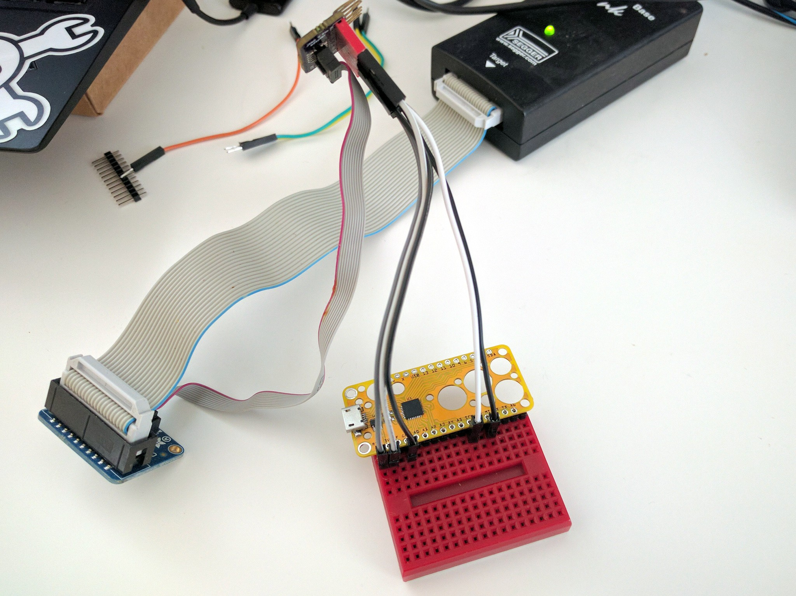
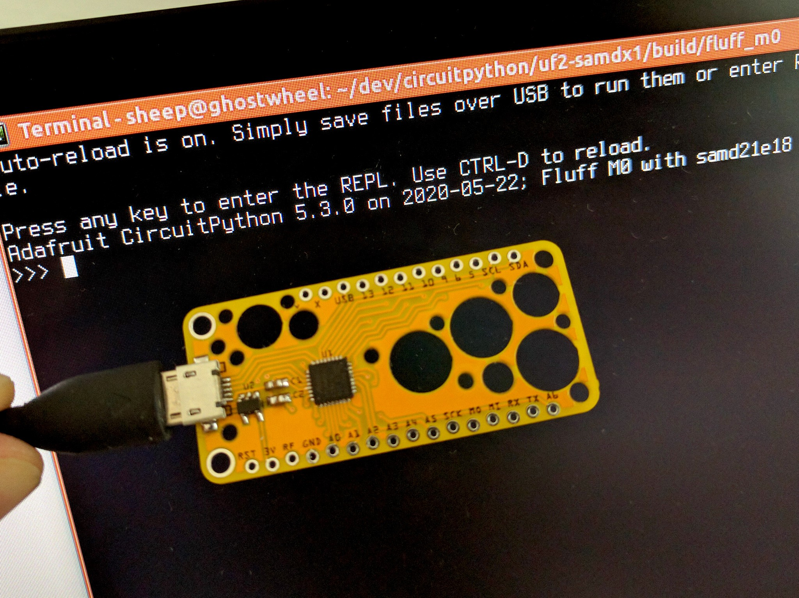

Assembled and Flashed¶
Published on 2020-05-22 in Fluff M0.
Since today is a holiday for me, I had the time to immediately assemble of Fluff M0 and flash it with the bootloader and CircuitPython. Since all pins, including the SWD and SWC are broken out, flashing is simple:

You just have to connect 3V to VCC, GND to GND, SCK to SWC and MISO to SWD. Then a couple of terminal commands:
$ JLinkExe -if SWD -device ATSAMD21E18 -speed 4000kHz
SEGGER J-Link Commander V6.40 (Compiled Oct 26 2018 15:08:38)
DLL version V6.40, compiled Oct 26 2018 15:08:28
Connecting to J-Link via USB...O.K.
Firmware: J-Link V10 compiled Oct 26 2018 12:04:17
Hardware version: V10.10
S/N: 50112638
License(s): GDB
VTref=3.290V
Type "connect" to establish a target connection, '?' for help
J-Link>connect
Device "ATSAMD21E18" selected.
Connecting to target via SWD
InitTarget()
Found SW-DP with ID 0x0BC11477
Scanning AP map to find all available APs
AP[1]: Stopped AP scan as end of AP map has been reached
AP[0]: AHB-AP (IDR: 0x04770031)
Iterating through AP map to find AHB-AP to use
AP[0]: Core found
AP[0]: AHB-AP ROM base: 0x41003000
CPUID register: 0x410CC601. Implementer code: 0x41 (ARM)
Found Cortex-M0 r0p1, Little endian.
FPUnit: 4 code (BP) slots and 0 literal slots
CoreSight components:
ROMTbl[0] @ 41003000
ROMTbl[0][0]: E00FF000, CID: B105100D, PID: 000BB4C0 ROM Table
ROMTbl[1] @ E00FF000
ROMTbl[1][0]: E000E000, CID: B105E00D, PID: 000BB008 SCS
ROMTbl[1][1]: E0001000, CID: B105E00D, PID: 000BB00A DWT
ROMTbl[1][2]: E0002000, CID: B105E00D, PID: 000BB00B FPB
ROMTbl[0][1]: 41006000, CID: B105900D, PID: 001BB932 MTB-M0+
Cortex-M0 identified.
J-Link>loadfile bootloader-fluff_m0-v3.10.0.bin 0
Downloading file [bootloader-fluff_m0-v3.10.0.bin]...
Comparing flash [100%] Done.
Erasing flash [100%] Done.
Programming flash [100%] Done.
Verifying flash [100%] Done.
J-Link: Flash download: Bank 0 @ 0x00000000: 1 range affected (8192 bytes)
J-Link: Flash download: Total time needed: 0.182s (Prepare: 0.026s, Compare: 0.018s, Erase: 0.000s, Program: 0.125s, Verify: 0.008s, Restore: 0.002s)
O.K.
And the bootloader is flashed. Now the FLUFFBOOT disk appears, and we can drag the CircuitPython UF2 file to it. Done.
